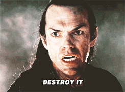

I’m on the AI software development train like everyone else. I can’t deny the productivity boost—it’s too dramatic, too undeniable at this point to avoid—but a whole raft of new challenges is coming along for the ride, and I want to get some of my early thoughts down.
I’m building a company, so I’m not just making weekend toys for personal use (although I’ve done some of that, too). My career and my reputation are on the line, I have skin in the game, so I can’t just vibe and pray that the LLM slot machine keeps delivering what I need to provide value to clients, I need systems and guiding principles for navigating an uncertain terrain.
This is doubly true for enterprise data systems, which is what I specialize in, but it applies to any project where your ass is on the line, and the efficient, reliable, maintainable functioning of the system actually really matters.
I should state at the outset that I don’t have decades of experience to draw from, my career is 9 years long, and programming has only been a part of that for about 5. I learn quickly, but I can’t claim any special wisdom.
I’m just trying to navigate responsibly. From what I’ve gathered, these challenges seem shared across a range of different experience levels.
So, for whatever it’s worth, I’ve been mentally noting my internal clench-o-meter for the last six months while doing different kinds of work, and I’ve started crystallizing some thoughts:
Software and the Blues
“It’s not the notes you play, it’s the notes you don’t play”
— Miles Davis (maybe)
I’ve been playing guitar since I was 10.
The thing about playing guitar is that once you learn to play fast, it takes about 10 more years before you finally learn to shut the fuck up.
I shut the fuck up about 3 years ago, and nowadays I play blues, funk, and a bit of jazz and samba. Genre isn’t the point, though, the point is knowing that less is usually better.
With the guitar, your fingers kind of… babble. Certain ergonomic shapes and patterns are the path of least resistance for your brain, so you end up repeating “licks” a lot. The problem is that those ergonomic patterns often don’t map to sounds that people actually want to hear.
Freebird is cool, Eddie Van Halen is cool, but sometimes… you know, just… shut the fuck up?
I think we’ve all just been given the Devil’s hands and become facemelting shredders, most of us without the decades of developing taste, and things are getting noisy.
All of a sudden there is no friction and we can all move fast in any language, on any project. I think the earliest stage of AI psychosis is when you realise this, get extremely excited, and immediately start taking on projects that are just wayyyyy out of your wheelhouse, because you think you can do anything, now.
But you do a second rate job, and just kind of… waste time, before returning to what you know. Learn new things, sure, but it takes time to get familiar enough with a domain to produce worthwhile contributions to it.
This will happen outside of software, too. It won’t be long until the office is overflowing with the HTML equivalent of Freebird at max volume on repeat.
Can you feel the future yet?
My point is… we probably all need to learn restraint. The best blues players know when to flex their chops, but can still send shivers down your spine with the right four note phrase.
Good blues playing is all about restraint, leaving space, tension and release. Play less, feel more. It is considered. It’s not automatic. It’s not a stream of tokens.
The actual feel of the blues is subtle in execution and maybe not well understood by the casual listener. It’s all about micro bends up to a critical zone between the minor and major third and seventh, all ascent, never descent (that kills the effect), vibrato, dynamics, space… subtle things that combine to tingle our souls and make us happy to be sad, or sad to be happy… but we share it, and it feels like things will be alright.
It takes a long time to develop that subtlety, you can’t really fake it. It takes work.
AI let’s us skip the work, if we don’t want to do it… But I don’t think that will go well, in art, in music, in science or in engineering.
The LLMs are following token streams, not your dreams
“They know the words but not the music.”
—Robert Hare, Without Conscience (encountered in Peter Watts’ Blindsight)
For any feature I develop, I find myself thinking that I want to get to it with as little code as possible. The more services and unused code paths I let creep in, the faster the code expands beyond my cognition, and I’m back at Freebird again.
This has led me to favour database centric design for data workloads (avoiding application logic in favour of views and RPCs), which I know is controversial (in the web-dev community, at least) but for my domain it leads to less code and keeps system understanding high.
No business logic in the database! is what I hear… but, it just works too well for me, in my problem context, to listen.
A SQL script, even if you don’t like the syntax, is a very self-contained and well-behaved piece of logic. There is no ambiguity about the data contract coming in, the execution plan, and the data contract coming out, because it is all internal to its own system. The database just says “here you go” or “no can do”, and it will work forever once you get it right, because the system’s internal contracts are solid as a rock.1
This makes a web API, for example, a pass-through of the work the database is doing. There are obviously cases where this can’t work, like authentication flows, but if I can do it, it’s my favoured approach.
Compared with an application based data workload… and suddenly you have external dependencies, error handling, and data being generated somewhere else on the network, which needs to get back to the database. That means contending with distributed systems challenges—incomplete execution, retries, back-off, cache invalidation—I like to avoid all that (as long as I can), because it’s just simpler.
I have the luxury of focussing on the C and A in CAP2, because of the kind of problems I work on (lucky me).
My point here is… The LLM isn’t giving me this without extra, careful work. You could sneeze on your keyboard and come back 5 minutes later to a fully tested backend API written in Python, and if you don’t have strong opinions on the matter you might say “looks good to me” and keep moving forward.
I’m not kidding when I say that I have generated and deleted entire web APIs from a few of my projects, multiple times, because I let the LLM vibe, but I just didn’t like the way it was doing things.
That experience is why, if I notice I’m just accepting everything the robot is giving me, my clench-o-meter spikes, and I slow the fuck down. Because I don’t have an opinion, which means I’m not ready to proceed. I’ll come back when I have one.
The model knows all the words, but it can’t hear your music. So slow down, or get slopped.
What parts of your system are slop-tolerant?
All vibes are not created equal. Different parts of your system are more or less sensitive to the slop, and their tolerance depends on where they sit in the interconnected network of computation and logical dependencies that couples data storage, transformation, interactivity and presentation in your system.
Visualize it like a tree, from roots (infrastructure, database, state) to leaves (artifacts, plots, data presentation).

Artifacts
You can shake a few branches up in the canopy, and sure, some HTML leaves might come loose… but who cares? Vibe your throwaway HTML docs, vibe your plots, you’d be crazy to hand write them at this point. The rest of the tree won’t notice.
Frontend
Your frontend interface… buttons, widgets, styling… well, you can vibe it, but you might not love the results, so taking your time is still worthwhile. A badly coded hook might not perform well in client browsers, maybe React is rendering everything twice, maybe there’s jitter in page navigation… but that isn’t all systems red, it’s just not ideal.
Taken to an extreme, an absolute nightmare of vibe coded spaghetti for a frontend is… bad, obviously, but it isn’t armageddon. You can saw off your frontend completely and the trunk and roots of your system can stay put. If you were in that situation, would you try and fix the nightmare, or just start again? I know what I’d do (have done).
So your frontend is, relatively speaking, slop tolerant. Vibe away.
What about your backend?
Backend
Your API doesn’t really care about your frontend, just send the response back and shut up, or don’t, it doesn’t care. If your frontend is slop, the backend has authentication and rate limiting and CORS to protect against the worst consequences of that.
But now there is a lot more slop exposure. What if your backend is a pile of shit? Maybe you have several downstream services depending on it. What if you want to completely rework the API design, six months later when you look closely at it for the first time, and cry? Now you’re chainsawing the trunk of the tree, or grafting a new trunk to it, and it’s not going to be fun. Your backend is not very slop tolerant. Slow down and make carefully considered choices, do not Freebird that shit.
… And your database?
Database
… Laaawwwwwwwwwwwwd.
If you vibe code your database schema, and your system is not so simple you could run it out of a google sheet, you better start mentally preparing yourself for the slop-pocalypse, because the database is your root system, and vibes at that level of stability is otherwise known as a fucking earthquake, my guy.
How many dead Supabase projects out there are just sitting with fully public APIs because the vibes never included Row Level Security policies? How many live ones? Hopefully not too many.
Zero slop tolerance.
Every table. Every column. Every constraint. Every policy. Every decision. If you are not on top of all of it, you are asking for pain.
If a composite unique constraint is left out or misspecified on an important table, for example, (a tiny, one line, easy to miss mistake), and you plow ahead with data ingestion, the rest of the system is all cooked.
How many extra checks will downstream application logic need to run when they can’t rely on the database’s internal model of how the data works? You can’t trust the invariants from the deepest roots of your system. Have fun watching your LLM committing 1,000s of extra lines of code, working around the mistake (or maybe you’re not watching).
You might say, Nick, we just fix it up in the database, it’s one migration script, it’s not a big deal.
But we’re living in the vibes era… You didn’t notice the mistake, that’s the problem!
Play out what happens next:
- You tell your LLM to write a new backend route
- The LLM writes it, along with a test to verify behaviour
- The database data is wrong, (multiple entities, route expects one) so the test fails
- LLM thinks about how to work around it, and starts writing:
try DoingSomething.PerfectlyReasonable.ThatShouldNeverFail:
if ('FUCKING_SLOP') in Database.EarlyHighCommitmentDecisions:
try:
query = f"""
SELECT
your_soul
FROM
purgatory
JOIN
the_rest_of_your_illbegotten_kind AS yibgk
ON
(300 lines of SQL subqueries go here)
"""
...
except SlopSlopException:
print("Slop was detected, first line of slop countermeasures failed...")
...
raise SlopException:
print("Just start over, dude.")… and so on, all over your backend code.
- The next LLM learns the pattern and keeps doing this on repeat
- Freebird
And do you notice this before deploying? Or are you just seeing it now?
The most insane, unhinged shit I have ever seen LLMs do is usually surrounding the database. I think because databases are very stateful, and LLM’s understand the gravity of making changes, they tend to dodge instead of deal with problems. Relatable.
If you’re developing and have zero customers and zero data, they won’t know that unless you explain it, so they’ll take these extremely defensive, extremely silly actions by default. Super sensitive to vibes, super slop intolerant. Early decisions matter a lot. So go slow.
Infrastructure
Ok the database is important… so the infrastructure that the database is running on is even more important. If the database is the root system, the infrastructure is the earth itself. In this environment, an agent can create armageddon because a terraform destroy is basically that, for cloud infrastructure (the name is a hint).

I’m not sure how to think about a low probability that your entire production environment gets deleted while an agent on a cron job does some checks one morning… other than that from a simple risk analysis perspective, don’t fucking do that.
Humans have a clench-o-meter. If I’m working in a repository with terraform code in it, and I see make commands called things like
restart-prod
init-prod
init-prod-run-this-once-only-because-it-deletes-everything-hehe
I get a bit nervous. I clench. Because I don’t want to blow up the production environment. Because I like my job… because I like money… because I like being alive. Humans have skin in the game.
AI isn’t burdened with these concerns.
AI doesn’t have concerns outside of
“next token is terr-”
“and then -afform”
“and then… plan? … apply? des? … destroy!”
So… however unlikely it may be, you are just one “you’re absolutely right!” down a divergent path through token-town away from fucked every morning when that cron job runs… maybe we should let the humans do those checks.
Autonomous agents probably shouldn’t be running on a machine with a control surface over critical infrastructure. It would be like keeping a gerbil inside the nuclear football—sure, it’s not likely to press all the buttons in the right order to convince the subs to launch… but can we just not do that?
I’m not a cloud guy—there are experts that can think through these things better than me—I just know from experience that we’re all susceptible to exposing ourselves to risk when hype, KPIs, FOMO, and other corporate politics seep into our judgment.
Don’t stop vibing
The answer to all these challenges is most definitely not stop using AI. I want to move forward with technology and remain up to date with the latest tools. But I think the unthinking, tokenmaxxing version of AI (dark factories, agents reviewing other agents, never looking at code) is something I still reject. Not because my ego hurts because a robot codes faster and better than me (I’m well past that), but because I think it genuinely invites big problems into the software engineering discipline.
My setup is extremely barebones. I use Pi, with old models as far as I can get away with it, I talk with the agent and I /tree through our plans. It works. I’m in control. I can slow down, speed up, as I need. I don’t need to go faster. I’ve experienced enough AI work to start to have a sense of when to open the throttle, and when to hit the brakes.
Maybe my attitudes are related to my belief that AI is not some kind of new really smart person living on a GPU. AI is doing a thing that is very different to human judgement under uncertainty with exposure to risk. These things are jittering through token-town, and while they do an astounding job of making sense, they don’t hear the music.
To do responsible technical work, I think humans still need to be in the studio playing—or at the very least, keeping their ear to the wall—with one hand on the plug, ready to shut things down when the music goes bad.
Becase these things know all the damn words, but they don’t care about the music.
Footnotes
Until a query plan flip brings your platform to a grinding halt, at least. More reason for careful consideration, not vibes.↩︎
Yeah, I picked up that second edish of Designing Data Intensive Applications.↩︎